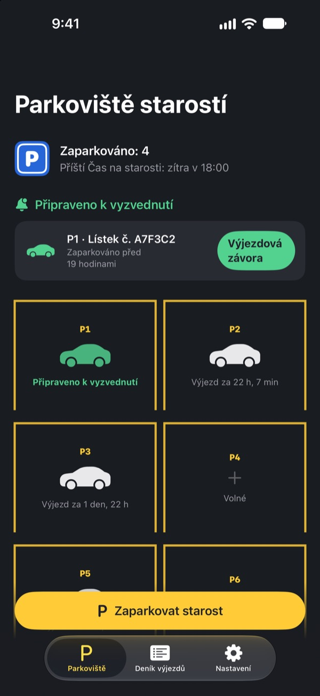
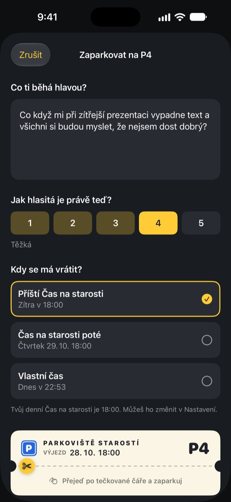
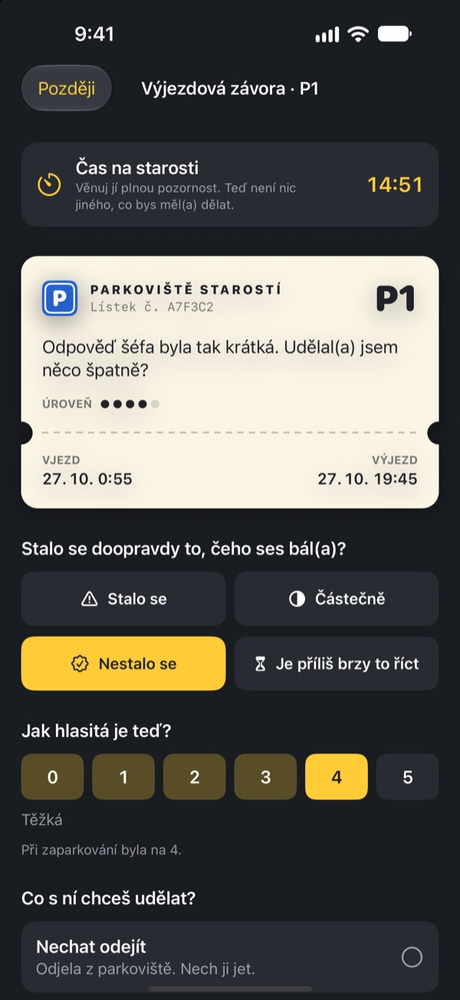
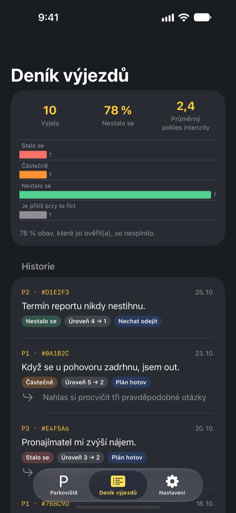

Zaparkuj starost.
Vyzvedni si ji později.
Zapiš, co se ti před spaním honí hlavou, a nech to na parkovacím lístku. V Čase na starosti ti to vrátíme. Do té doby to nemusíš nosit s sebou.
Všechny funkce jsou zdarma. Bez reklam a bez účtu.

Zaparkuj jednu starost
Nech příklad, nebo napiš, co tě právě trápí. Po zaparkování se rozmaže a v Čase na starosti ji zase vytáhneš.
Zhasnuto, a hlava pořád jede?
Sotva položíš hlavu na polštář, začne to: věta, kterou jsi dnes řekl, zítřejší porada, zpráva, na kterou nikdo neodpověděl. Čím víc se snažíš na to nemyslet, tím je to hlasitější. Parkoviště starostí po tobě nechce, abys starost zaháněl. Zapíšeš ji, dáš jí místo a vyhradíš si čas, kdy se jí budeš věnovat.
Zapsaná starost odejde z hlavy
Zapiš ji přesně tak, jak ti zní v hlavě, a označ, jak je teď hlasitá, od 1 do 5. Utrhni lístek a starost zůstane rozmazaná na parkovišti.
Když ti zase vjede do hlavy, řekni jí: místo už máš. Tvůj čas přijde, ale teď ne.

15 minut v Čase na starosti
Každý den v Čase na starosti přijde upozornění. U výjezdové závory si starost znovu přečteš, zjistíš, jestli se opravdu stala, a jak je teď hlasitá.
Pak ji pustíš, uděláš z ní jeden malý další krok, nebo ji zaparkuješ do dalšího Času na starosti.

Uvidíš, jak často měly starosti pravdu
Čím víc starostí vyjelo, tím jasněji deník výjezdů ukazuje, kolik se jich opravdu stalo a o kolik zeslábly.
Starost obvykle maluje budoucnost černěji, než jaká pak je. Čím víc zapisuješ, tím míň věříš té další.

Začni ve třech krocích
- 1
Vyber si Čas na starosti
Při prvním spuštění si vybereš, kdy se budeš starostem každý den věnovat. Později to změníš v Nastavení.
- 2
Zaparkuj skutečnou starost
Hned zaparkuj něco, co tě tíží, a všimni si, jak se síla změní před a po.
- 3
Povol upozornění na vyzvednutí
V Čase na starosti přijde upozornění jen s číslem místa.
Proč to funguje
- Dělat si starosti jen v určený čas
- Lidé, kteří přesunuli starosti do krátké denní chvíle, se trápili méně a uváděli méně úzkosti a potíží se spánkem. (Borkovec a kol., 1983; McGowan a Behar, 2013)
- Zapsat a pustit
- Konkrétní plán bránil nedodělaným věcem vtírat se do myšlenek a pět minut psaní před spaním lidem pomohlo rychleji usnout. (Masicampo a Baumeister, 2011; Scullin a kol., 2018)
- Ověřit, co se opravdu stalo
- Když si lidé s chronickými starostmi své starosti zapisovali, 91 % z nich se nenaplnilo. (LaFreniere a Newman, 2020)
Parkoviště starostí vychází z odkládání starostí, techniky kognitivně-behaviorální terapie (KBT), kterou se výzkum zabývá už desítky let.
Všechno je zdarma
Zdarma
- Neomezený počet parkovacích míst
- Denní upozornění v Čase na starosti a vlastní čas výjezdu
- Výjezdová závora a deník výjezdů
- Přehledy výjezdů: kolik se jich naplnilo a o kolik zeslábly
Spropitné, pokud chceš
- Když ti aplikace pomáhá, můžeš vývojáři poslat malé spropitné
- Malé, střední nebo velké, jak chceš
Spropitné nic neodemyká. Bez něj funguje všechno stejně.
Žádné reklamy, účet, servery ani analytické nástroje. Všechno, co napíšeš, zůstává v tvém iPhonu.
Časté otázky
Jak změním Čas na starosti?
Na kartě Nastavení v položce Čas na starosti. Nový čas platí pro starosti, které zaparkuješ potom. Už zaparkované si nechají původní čas výjezdu.
Nechodí mi upozornění na vyzvednutí.
Zkontroluj Oznámení na kartě Nastavení. Pokud jsou vypnutá, klepni na Otevřít Nastavení iOS a zapni je. Se zapnutým režimem soustředění nebo Nerušit můžou upozornění přicházet potichu. I bez upozornění se starosti, jejichž čas nastal, na parkovišti zobrazí jako připravené k vyzvednutí.
Je moje starost vidět v oznámení?
Ne. Oznámení ukazují jen číslo místa, třeba „P3 je připraveno k vyzvednutí“. Samotnou starost uvidíš až po otevření aplikace u výjezdové závory.
Můžu se na starost podívat dřív?
Klepni na parkovišti na její auto a vyber Poslat ji hned k výjezdové závoře. Odkládání ale funguje nejlíp, když počkáš. Většina starostí se v Čase na starosti zdá menší.
Přenesu záznamy do nového iPhonu?
Všechno je uložené jen ve tvém iPhonu, bez účtu a synchronizace. Když nový iPhone obnovíš ze zálohy na iCloudu nebo v počítači, případně použiješ Rychlý start, záznamy se přenesou spolu s ostatními aplikacemi.
Jak smažu záznamy?
Na kartě Deník výjezdů přejeď u záznamu doleva a smaž ho. Smazáním aplikace zmizí všechno.
Je to terapie?
Parkoviště starostí je svépomocný nástroj založený na odkládání starostí z KBT. Není to zdravotnický prostředek a nenahrazuje odbornou diagnózu ani léčbu.
Co když je mi opravdu zle?
Pokud ti starosti berou celé dny, nebo myslíš na to, že by sis ublížil, nenes to sám. V Česku volej 116 123 (Linka první psychické pomoci, nonstop) nebo 112 v naléhavé situaci.
Dotazy nebo nápady? Napiš na leeo@kakao.com.